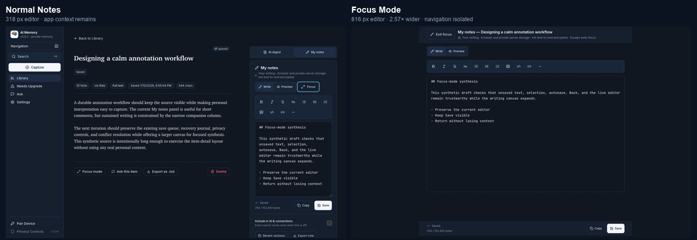
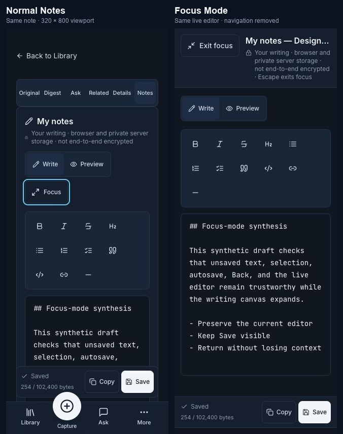

Outcome
The existing My notes section becomes an opaque full-viewport writing surface in place. Focus entry is deliberate. Exit, Escape, and browser Back return to the familiar item layout; Forward and direct focused URLs reconstruct the presentation after ordinary note recovery.
Selected over the alternatives
| Approach | Decision | Why |
|---|---|---|
| In-place app Focus | Selected | Retains the real editor and works across browser and Capacitor surfaces. |
| Dedicated route | Rejected | Would risk remount, duplicate requests, and lost transient editor state. |
| Portalled duplicate modal | Rejected | Creates competing content, journal, and save ownership. |
| Browser Fullscreen API | Rejected for v1 | Adds permission and platform variability without improving core writing value. |
AI & connections default
Include in AI & connections is a real global preference under Settings → My notes. New or deliberately recreated notes inherit it; existing notes keep their individual choice. Provider eligibility and consent remain mandatory, and exact search remains independent.
Focus Mode deliberately does not change this setting. The per-note management row is hidden during focused writing and returns unchanged after exit.
Visual result


Implementation
| Area | Release behavior |
|---|---|
| Responsive host | Persistent Notes/Digest panels wrap one responsive ManualNoteEditor. |
| Presentation | The same section gains fixed full-viewport styling and modal semantics. |
| History | Native History API plus content-free tab=notes¬e_mode=focus. |
| Isolation | Transactional inert, aria-hidden, and scroll locking with exact restoration. |
| Editor state | Current caret, selection direction, textarea scroll, page scroll, mode, content, status, and save machinery remain. |
| Reliability | Focus Exit is prompt-free; only later navigation with neither device nor server durability is guarded. |
| Rollout | Default-off flag, explicit first-enable preflight, and previous-artifact rollback. |
History and request trace
Focus, Back, and Forward retained one textarea and identical content while producing zero note GET/PUT requests. A direct focused refresh produced exactly one expected note GET and returned to Saved.
Accessibility
The final code uses a labelled/described in-place dialog, exact background isolation, contained focus, Arrow/Home/End tab behavior, sticky-region scroll padding, continuously mounted live status, global focus-visible styles, and 44px mobile targets.
Quality and release evidence
| Gate | Status | Evidence |
|---|---|---|
| Lint, typecheck, diff | Pass | Clean repository checks. |
| Optimized production build | Pass | Next.js standalone artifact; existing unpdf warning only. |
| Focus flag rollback | Pass | Control absent, stale URL normalized, normal Notes intact. |
| Previous artifact rollback | Pass | Base SHA built, started, and served the prior normal Notes behavior. |
| Android keyboard / TalkBack | Unverified | No device or emulator is available; no unsupported claim is made. |
| Native undo shortcut automation | Residual | Same-node precondition is proven; modifier sequence could not be emitted by the browser-control layer. |
Recommended tightening and roadmap
Tighten next
- Add a content-free test-build editor instance ID for exact controller/node tracing.
- Add a deterministic IndexedDB failure adapter for the unsafe-navigation flow.
- Add approved browser CI for production History and network checks.
- Certify Android software keyboard, first/second Back, orientation, and TalkBack.
- Add VoiceOver/TalkBack checklists with captured spoken labels and focus order.
More note features
Annotation tool updates
- Inline comments anchored to selected Markdown with a clear stale-anchor state.
- Highlight-to-note capture with source provenance and cursor placement.
- Question, disagreement, decision, follow-up, quote, and idea annotation types.
- Open/resolved state, backlinks, passage tags, annotation filters, and provenance-aware export.
- Optional AI connection suggestions only when the effective AI/connections preference allows it.
- Mobile selection action, dictation-friendly editing, and a larger comment composer.